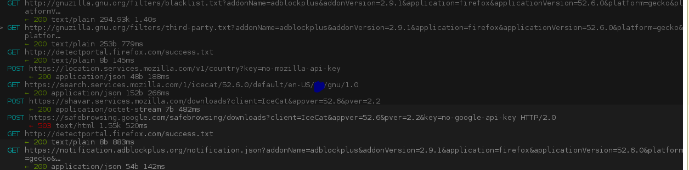

GNU IceCat (v59)
Note: This article is outdated. Here is the updated version.
GNU IceCat is a web browser that is a fork of Firefox.
Spyware Level: Low
GNU IceCat is a fork of Firefox that is more private and secure than Firefox and it contains several privacy-protecting features. However, it still contains a lot of the spyware features found in Firefox. So, while it's better than Firefox, it still has a lot of problems that Firefox has.
Phoning Home
Even though IceCat has better privacy features out of the box than Firefox, it still phones home by default to GNU, Mozilla, and Google.
So, while it claims to respect your privacy, it doesn't take steps to stop spyware features like this.

IceCat's privacy features
From gnu.org
LibreJS: GNU LibreJS aims to address the JavaScript problem described in Richard Stallman's article The JavaScript Trap.
Https-Everywhere: Extension that encrypts your communications with many major websites, making your browsing more secure.
SpyBlock: Blocks privacy trackers while in normal browsing mode, and all third party requests when in private browsing mode. Based on Adblock Plus.
AboutIceCat: Adds a custom "about:icecat" homepage with links to information about the free software and privacy features in IceCat, and checkboxes to enable and disable the ones more prone to break websites.
Fingerprinting countermeasures: Fingerprinting is a series of techniques allowing to uniquely identify a browser based on specific characteristics of that particular instance (like what fonts are available in that machine). Unlike cookies the user cannot opt-out of being tracked this way, so the browser has to avoid giving away that kind of hints.
Sources
1.
Dig Deeper
[original image link]
This article was last edited on 6/21/2018
If you want to edit this article, or contribute your own article(s), visit us at the git repo on Codeberg. All contributions must be licensed under the CC0 license to be accepted.

Back to catalog
![[original image link]](../images/icecat.png){kind=link}